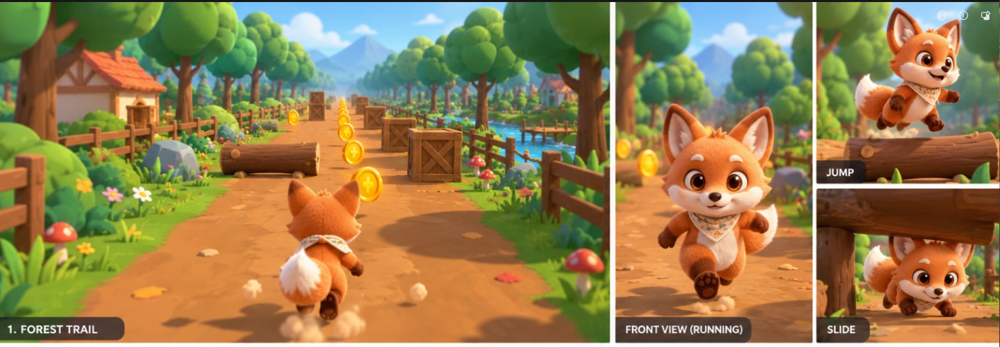
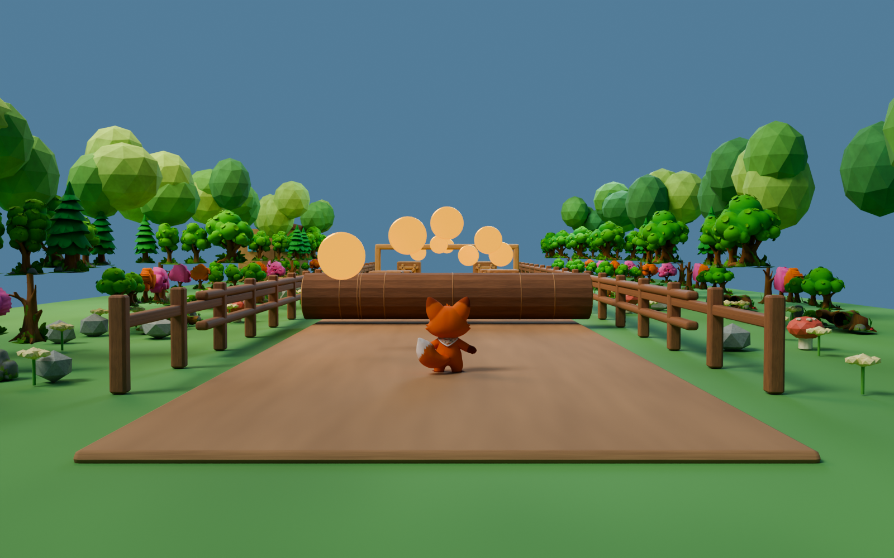

01 · TAKEOFF
🪵
The jump log
Build a little momentum, then leap over the fallen trunk.
A happy little run through the trees. Help Cheeko find the clearing.
A tiny browser adventure inspired by the Cheeko Forest Trail level.

Play the browser preview below · keyboard or touch
Leave the quiet start pad and follow the floating coin trail into the woods. The path has a few surprises along the way, but there’s always a way through if you keep your eyes up.

Each beat asks for a different move. Keep your paws light and follow the coins.
Build a little momentum, then leap over the fallen trunk.
Move across the open lanes to find your way between the crates.
Drop low and slide through the leafy tunnel.
One last weave, then race toward the sunny finish clearing.